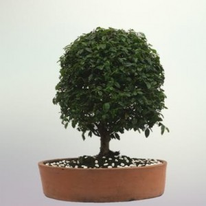
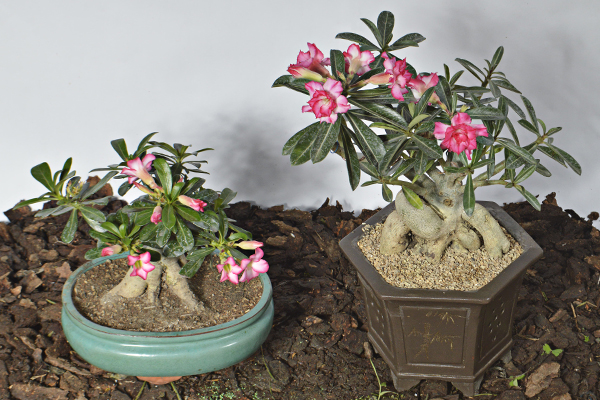
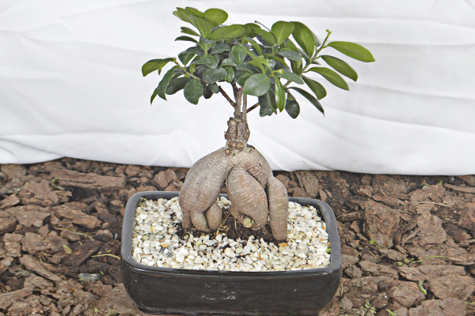
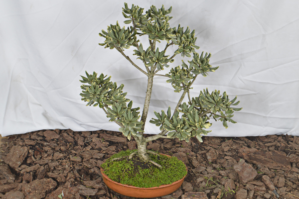

El arte del bonsái se originó en China hace unos dos mil años, en donde se conoce como Penjing, como objeto de culto para los monjes taoístas. Para ellos era símbolo de eternidad, el árbol representaba un puente entre lo divino y lo humano, el cielo y la tierra.
Durante siglos la posesión y el cuidado de los bonsáis estuvo ligado a los nobles y a las personas de la alta sociedad. Según la tradición, aquellos que podían conservar un árbol en maceta tenían asegurada la eternidad. Así fue como los monjes disponían los árboles pequeños en vasijas a lo largo de las escaleras de los templos y hasta eran fuente de culto.
Mantenimiento y cuidados del Bonsais
Ubicación de sus árboles
Decidir la ubicación óptima de sus Bonsáis puede no ser fácil ya que diversos factores (clima local, estación del año, especie arbórea, etc.) condicionan esta cuestión tan importante. Lo mejor es en primer lugar tener en cuenta la especie arbórea y darle un vistazo a la información específica sobre esa especie.
Trasplante del Bonsái
Para prevenir que un árbol sature la tierra de raíces y finalmente muera es crucial realizar su trasplante regularmente. El trasplante no hará que permanezca pequeño, al contrario, lo que hace es proporcionar al árbol nuevos y valiosos nutrientes para su crecimiento y floración.
Abonado del Bonsái
Abonar regularmente su Bonsái durante la temporada de crecimiento es crucial para su supervivencia. Los árboles normales son capaces de extender su sistema radicular en búsqueda de nutrientes, sin embargo los Bonsái están plantados en macetas bastante pequeñas y necesitan ser abonados con el objetivo de ir renovando el contenido nutricional de la poca tierra de la que disponen.
Riego del Bonsái
La parte más importante del cuidado del Bonsái es el riego. La frecuencia de riego del árbol depende de diferentes factores (especie del árbol, tamaño del árbol, tamaño y forma de la bandeja, estación del año, mezcla de suelo y climatología) lo cual quiere decir que es imposible decir con qué frecuencia debe regar su Bonsái. Sin embargo si entiende unas pocas normas básicas éstas le serán de ayuda para saber cuándo necesita ser regado su Bonsái.

Bonsais Diez Años

Bonsais Flor Del Desierto

Bonsais Ficus Retuzo

Bonsais Ficus Pittosporum
Contactos
Vivero Florisanto
Telefonos: 3135058066 - 3126688884 -
Email:vivero-florisanto@hotmail.com
Dirección: Calle 29 # 38-70 Via Planeta Rica K2